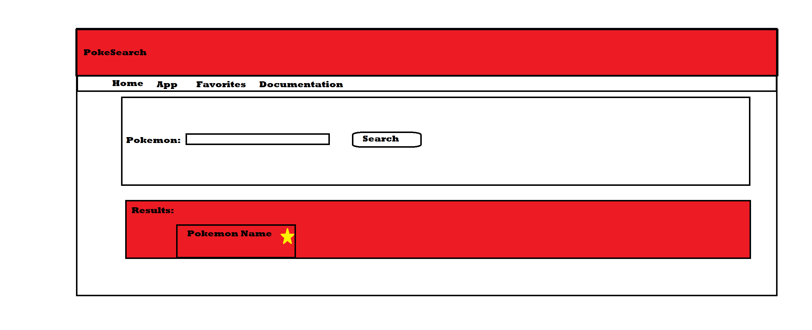

Pokefinder Documentation
PROPOSAL
- Type in the name or a part of the name of the Pokémon
- After you hit search the Pokémon will appear in the results based on what you typed
- You can favorite the pokemon you look up and view them in the favorites section of the site
PROJECT REQUIREMENTS
RESOURCES UTILIZE
- BULMA
- Font Awesome
- Bulma Navbar
- Pokémon Go Image: "https://commons.wikimedia.org/wiki/File:Pokémon-go-1569794_1920.jpg"
- Pokécard Image: "https://cdn.pixilart.com/photos/large/a672c7ce2caaf4f.png"
- Reverse order for user favorites
- Storing Objects in localStorage
{kind=link}
{kind=link}
API
- API Home: https://rapidapi.com/chewett/api/pokemon-go1
- API Endpoint: https://pokemon-go1.p.rapidapi.com/pokemon_names.json
- API Documentation: https://rapidapi.com/chewett/api/pokemon-go1/details
- API Key: a88e05f782msh9a3a1257e276400p1bb2e0jsn95babed53bcc
- API Host: pokemon-go1.p.rapidapi.com
NOTEWORTHY
- When the user clicks the search button the .is-loading class is used, letting the user know something is happening
- When you favorite a Pokémon, the button will change so that the user cannot click it again
- Users are able to view their favorites in reverse order, allowing them to see their most recent favorites
- User can view all Pokémon currently present on the list if they select number of results to all
- They can also view all Pokémon that match with your search by setting number of results to all
- Users are able to remove individual cards from their favorites
- When a user favorites a Pokémon and it gets added to the community tab, a like counter is present to show users how many people liked this specific Pokémon
GRADING
Requirements Met
- When you favorite a Pokémon it gets saved to local storage and firebase
- After favoriting the Pokémon, the button prevents the user from favoriting it again unless they search for it once more
- Favorited cards are stored in local storage and firebase
- Cards containing info pulled from the JSON are created in the App, Favorites and Community pages
- Ajax via fetch() is currently being used on the App page
- User is able to remove individual favorites from the Favorites page
- When you remove a card from the Favorites page the card is removed from the innerHTML as well as the local storage
- Firebase is used to store the values and then post them to a community tab for people to see what Pokémon people have liked
- App page lets the player know if nothng has come up based on their search
- Easy to understand layout for people new to the site
- Web Components - (Header, Footer, Result/Favorite/Community Cards, Navbar).
At the moment I believe I have something around an 85 or higher, I do feel like I could make more improvements on the website
TO DO
- Find images for all of the Pokémon in the JSON (The sprites meant for each one instead of the default card one
- Add more functionality to the favorites page (Sorting)